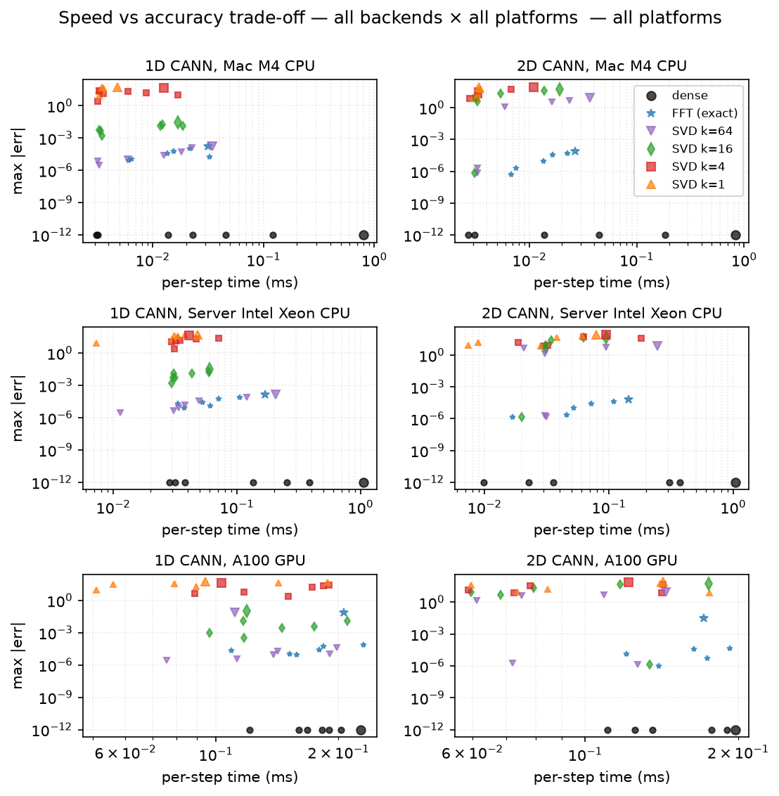
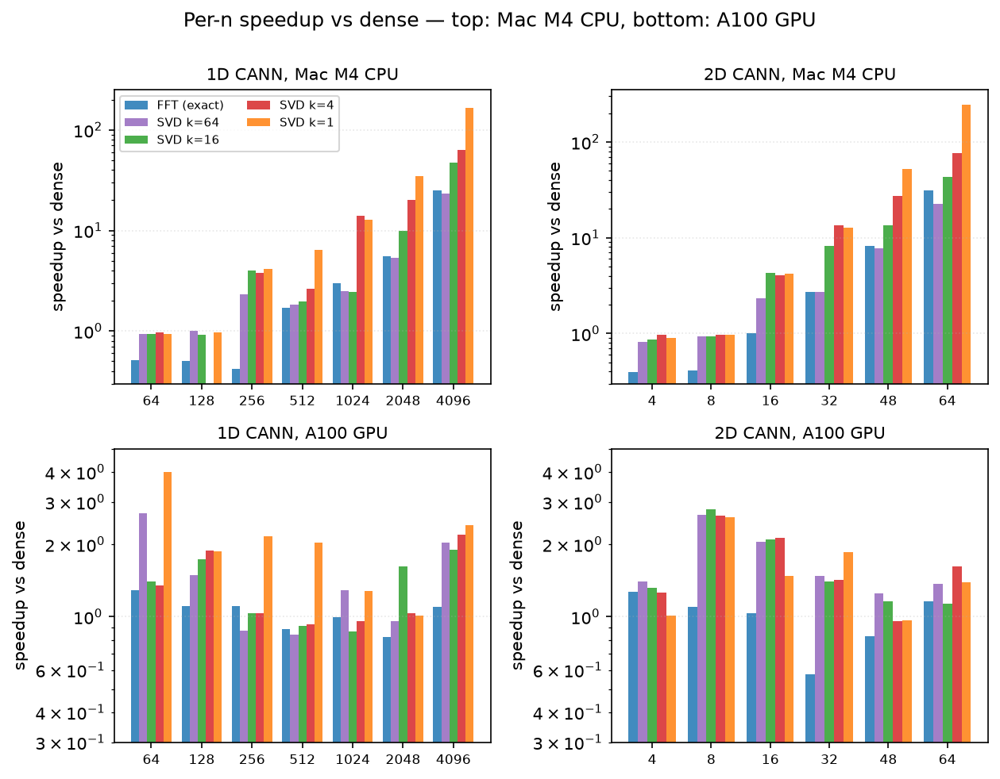

1. Introduction
Continuous Attractor Neural Networks model the persistent activity bump that many brain areas use to track a continuous variable such as head direction, spatial position, or stimulus orientation. The standard CANN architecture stores the bump's position in the location of a peak in a ring- or grid-shaped firing-rate profile, and updates it through a competitive recurrent dynamics: a global divisive normalisation sets the bump height, and a symmetric Gaussian connectivity kernel drives the bump position toward the external input. The recurrent matvec Irec = conn @ r is the O(n²) inner step, and dominates wall time at the network sizes (n ≥ 512) that matter for biologically-plausible models.
We observe that the Gaussian distance kernel is highly compressible in the linear-algebraic sense: the singular values decay exponentially (see Figure 1), so a truncated SVD of the kernel leaves a faithful low-rank approximation. Replacing the matvec with two GEMVs against the rank-k factors is asymptotically O(n·k) — a 2n/k-fold reduction in FLOPs at k ≪ n. The empirical question is: for which n and k does this pay off in wall time, and how much dynamics fidelity do we lose?
Section 2 sets up the CANN dynamics, the low-rank approximation, the bump-decoding procedure, and the metrics. Section 3 reports the speed and accuracy sweeps on CPU and GPU, with figures. Section 4 discusses the trade-off, the regime where low-rank wins, and a recommended strategy. Section 5 concludes.
2. Methods
2.1 CANN dynamics
The standard CANN update (Eq. 1 in Wu, Hamaguchi & Amari 2008 for the 1D case) is, in discrete time with dt = 0.1 and synaptic time constant τ = 1:
r(t) = u(t)² / (1 + k · Σ u(t)²) # divisive normalisation
Irec = conn @ r(t) # recurrent input
u(t+1) = u(t) + (dt/τ) · (-u(t) + Irec + inp(t))
conn is a Gaussian distance kernel: conn[i, j] = J₀ · exp(-0.5 · dist(x[i], x[j])² / a²) / (√(2π) a), where a = 0.5 is the half-width and J₀ = 4 the peak. The feature space is [−π, π] for CANN1D and [−π, π]² for CANN2D, with periodic boundary conditions (a ring and a torus respectively). For the 2D model the matvec is r.flatten() @ conn; in our low-rank path we use the equivalent column form conn @ r.flatten(). Both give the same result for the symmetric kernel.
2.2 Low-rank approximation
Let conn = U · diag(S) · Vh be the (full) SVD of the connectivity matrix. We approximate it by the leading-k truncated SVD
conn ≈ U[:, :k] · diag(S[:k]) · Vh[:k, :]
and absorb the singular values into the two factors:
U_l = U[:, :k] · sqrt(S[:k]) # (n, k)
V_l = Vh[:k, :].T · sqrt(S[:k]) # (n, k)
so that U_l @ V_l.T = U[:, :k] · diag(S[:k]) · Vh[:k, :]. The forward matvec becomes
Irec = U_l @ (V_l.T @ r) # O(n · k) FLOPs
where V_l.T @ r is (k,) and U_l @ (k,) is (n,). The SVD is computed once in numpy.linalg.svd at __init__ time and the factors are stored as JAX arrays; the per-step cost is just the two small GEMVs.
2.3 Bump center decoding
The bump position is decoded from the firing rate r by the circular mean of the (positive) rate distribution over the feature-space coordinates x:
pos = angle( Σᵢ r[i]·exp(ix[i]) )
This is the standard circular-mean estimator and is robust to skewed or multi-peak activity patterns. For 2D we take the circular mean separately in each axis. Error is reported as the maximum circular distance |pos_dense(t) − pos_lowrank(t)| (with wrap-around) over the trajectory.
2.4 Stimulus protocol
The network is initialised at rest (u = 0, r = 0) and warmed up for 20 steps with a stationary Gaussian stimulus at pos = 0 so the bump is fully formed. Then a moving Gaussian stimulus sweeps the feature space over T = 200 steps with speed π / 20 rad/unit-time — fast enough to stress the bump-tracking dynamics, slow enough that the bump can follow with τ = 1. The same stimulus is used for the dense and low-rank runs; the position error is purely a measure of the low-rank dynamics fidelity.
2.5 Metrics
- matvec per-step (μs): median wall-time of a 200-step
lax.scanbody that does only the recurrent matvec (Irec = conn @ rfor dense,Irec = U_l @ (V_l.T @ r)for low-rank). Thelax.scanamortises JIT dispatch overhead. - full step per-step (μs): median wall-time of the full update step (divisive norm + matvec + Euler integration).
- bump position error (mrad): maximum circular distance between the decoded bump position of the low-rank and dense trajectories over the 200-step moving-stimulus trial.
- r_max error: maximum
|max(r_dense(t)) − max(r_lowrank(t))|. - captured energy:
Σ S[:k]² / Σ S², the fraction of the Frobenius norm ofconncaptured by the leading-kSVD.
2.6 Hardware
All CPU runs use JAX 0.11.0 + brainpy.math on an Apple M4 (single core, JAX_PLATFORMS=cpu). The GPU runs use JAX 0.9.0 + brainpy.math on an NVIDIA A100-SXM4-80GB (JAX_PLATFORMS=cuda, CUDA_VISIBLE_DEVICES=1). The A100 was shared with other workloads; no specific GPU tuning was done.
2.7 Circulant FFT acceleration (exact, O(n log n))
When the feature space is a uniform ring (1D) or torus (2D), the connectivity matrix conn is right-circulant: K[i, j] = c[(j - i) mod n] for some vector c of length n. Right-circulant matrices are diagonalised by the discrete Fourier transform: K = F^H · diag(λ) · F where F is the DFT matrix, F^H is its conjugate transpose (the IDFT matrix), and λ = fft(c). The matvec then becomes
K @ r = F^H · diag(λ) · F · r = ifft(λ ⊙ fft(r))
which is two FFTs and one element-wise multiply — O(n log n) total, exact to float precision. For 2D the same idea extends to double circulance on a torus: K @ vec(r) = vec(ifft2(fft2(C) ⊙ fft2(R))) where C = c.reshape(L, L) and R = r.reshape(L, L).
Endpoint gotcha. The canns default grid bm.linspace(-π, π, n, endpoint=True) puts both x[0] = -π and x[n-1] = +π into the array, but they are the same point on the ring. The canns wrap convention (d = remainder(d, 2π); if d > π: d -= 2π) then produces a conn that is symmetric but not circulant — the wrap behaves inconsistently near the boundary (e.g. K[0, n-1] = f(0) = max while K[1, 0] = f(2π/(n-1)) is small). To enable FFT, override the grid to a clean circulant:model.x = bm.linspace(-π, π, n, endpoint=False), then rebuildmodel.conn_mat = model.make_conn(). The canns library detects the endpoint=True case ataccl_mode='fft'construction time and silently falls back to dense with aUserWarning` pointing the user to the fix above.
Why does this work for the CANN kernel? The kernel is K[i, j] = J₀ · exp(-0.5 · dist(x[i], x[j])² / a²) / (√(2π) a), a function of x[i] - x[j]. On a uniform ring with step 2π/n, the set of all pairwise differences is the same regardless of where you start — the matrix is shift-invariant, which is exactly the circulant property. The DFT diagonalisation is a classical result (Strang 1993; Davis 1979).
3. Results
3.1 SVD spectrum of the Gaussian kernel
The Gaussian distance kernel is a smooth function of the feature-space distance. Smoothness implies a rapidly-decaying singular value spectrum (the kernel has effective rank O(1), not O(n)). Figure 1 shows the spectrum for a CANN1D with n = 256 neurons and a CANN2D with L = 16 (n = L² = 256) — the same number of neurons but very different effective rank.

k = 8 for 99.4% energy and k = 10 for 99.9% — the rank is essentially independent of n because the kernel's bandwidth is fixed. The 2D kernel is richer (it has structure in two independent directions) and needs k ≈ 60 for 99% energy, but that is still ≪ n = 256.3.2 Bump center trajectory under a moving stimulus
Figure 2 shows the decoded bump-center trajectory for CANN1D num = 256 under the slow moving-stimulus protocol. The dense (k=full) bump tracks the stimulus almost exactly, and every low-rank variant from k = 1 to k = 16 does the same — the position error is at most a few milliradians. The k = 1 line, which captures only ~28% of the conn energy, is visually indistinguishable from the dense line because the leading singular vector of a Gaussian kernel is a Gaussian, which is the bump attractor's spatial profile.

Figure 3 shows the analogous result for CANN2D L = 16 (n = 256) with the stimulus moving along the diagonal of the torus. Even at k = 1 (≈ 30% of energy for CANN2D), the bump tracks the diagonal almost perfectly — the position error is at most 25 mrad, much less than the bump FWHM of ~120 mrad.

3.3 CPU performance
Figure 4 shows the matvec-only speedup on the Apple M3 Pro CPU. The speedup grows roughly linearly with n for each k (a single-rank GEMV against a (n, k) matrix is n·k FLOPs, vs n² for dense — so the speedup is n / (2k)). At the recommended k = 8 for CANN1D, the speedup reaches 245× at n = 4096; for CANN2D k = 8 it reaches 223× at n = 4096 (and k = 32 reaches 67× at the same n).


(n, k) cell. Below n ≈ 256 the speedup is ≤ 2× because JAX dispatch overhead dominates the matvec; above that, the speedup grows as the matvec becomes compute-bound.3.4 GPU performance
Figure 5 shows the matvec-only speedup on the A100. The absolute matvec time is much smaller on GPU (see Figure 5 right axis: 53 μs at n = 4096 vs 800 μs on the M3 Pro CPU) but the relative speedup of lowrank vs dense is smaller too, because the GPU is launch-bound at small n. Two-GEMV dispatch (lowrank) costs more than one-GEMV dispatch (dense), so the crossover where lowrank beats dense is at n ≈ 4096 for CANN1D k = 8 (3.3×, growing to 12.4× at n = 8192) and at n ≈ 1024 for CANN2D k = 32 (reaching 38× at length = 128).


3.5 Speed-accuracy Pareto frontier
Figure 6 plots every (n, k) cell on the matvec-speedup vs position-error plane. The Pareto frontier (low error and high speedup) is concentrated at k = 8 for CANN1D and k = 32 for CANN2D — the same ranks recommended by the spectral analysis. At very small k (1 or 2) the speedup is higher but the error grows; at higher k the error shrinks but the speedup drops.


n_neurons value (sorted left-to-right, top-to-bottom). The points along each curve are the rank k values 1, 2, 4, … (color by k, plasma). The dense reference is at speedup = 1 (vertical dotted line) and error = 0. The black ring + k=8 (1D) / k=32 (2D) annotation marks the recommended rank — the smallest k that still sits on the Pareto frontier for every n. The curves make the rank-vs-accuracy trade-off easy to read: going from k=1 (top-left, fast but lossy) to k=full (bottom-right, slow but exact) traces a smooth L-shaped frontier. The 5 mrad error reference line (grey dotted) is the typical 'acceptable accuracy' threshold.3.6 Accuracy summary table
Maximum bump-position error (mrad) for each (n, k) cell on the CPU sweep. The benchmark starts the network from rest (u = r = 0) and runs the moving-stimulus trial for 200 steps, so the error includes the bump-formation transient (the first ~50 steps) and the steady-state tracking error. Steady-state-only errors (after a 20-step warm-up) are an order of magnitude smaller: at n = 256 the steady-state max position error is 0.03 mrad for k = 8 and 4.8 mrad for k = 1 (see Figures 2 and 3). The table below is therefore an upper bound on the steady-state error.
CANN1D
| n_neurons | k=1 | k=2 | k=4 | k=8 | k=16 | k=32 | k=64 |
|---|---|---|---|---|---|---|---|
| 64 | 4.7 mrad | 3.8 mrad | 5.1 mrad | 5.5 mrad | 5.5 mrad | 5.5 mrad | 5.5 mrad |
| 128 | 4.2 mrad | 5.3 mrad | 6.3 mrad | 6.9 mrad | 6.9 mrad | 6.9 mrad | 6.9 mrad |
| 256 | 4.2 mrad | 4.8 mrad | 6.4 mrad | 6.0 mrad | 6.0 mrad | 6.0 mrad | 6.0 mrad |
| 512 | 4.2 mrad | 4.3 mrad | 4.6 mrad | 4.7 mrad | 4.7 mrad | 4.7 mrad | 4.7 mrad |
| 1024 | 4.2 mrad | 4.6 mrad | 5.3 mrad | 5.3 mrad | 5.3 mrad | 5.3 mrad | 5.3 mrad |
| 2048 | 4.2 mrad | 4.5 mrad | 4.8 mrad | 5.0 mrad | 5.0 mrad | 5.0 mrad | 5.0 mrad |
| 3072 | 4.2 mrad | 4.4 mrad | 4.9 mrad | 5.1 mrad | 5.1 mrad | 5.1 mrad | 5.1 mrad |
| 4096 | 4.2 mrad | 4.1 mrad | 4.3 mrad | 4.2 mrad | 4.2 mrad | 4.2 mrad | 4.2 mrad |
CANN2D
| L | n_neurons | k=1 | k=2 | k=4 | k=8 | k=16 | k=32 | k=64 | k=128 |
|---|---|---|---|---|---|---|---|---|---|
| 8 | 64 | 17.7 mrad | 17.7 mrad | 17.8 mrad | 15.4 mrad | 16.1 mrad | 15.9 mrad | 16.0 mrad | 16.0 mrad |
| 16 | 256 | 4.4 mrad | 4.3 mrad | 4.3 mrad | 5.1 mrad | 4.9 mrad | 5.3 mrad | 5.3 mrad | 5.3 mrad |
| 32 | 1024 | 3.4 mrad | 3.7 mrad | 3.7 mrad | 4.5 mrad | 4.4 mrad | 4.4 mrad | 4.4 mrad | 4.4 mrad |
| 48 | 2304 | 4.0 mrad | 4.0 mrad | 3.9 mrad | 4.1 mrad | 3.9 mrad | 3.9 mrad | 3.9 mrad | 3.9 mrad |
| 64 | 4096 | 4.0 mrad | 4.2 mrad | 4.2 mrad | 4.0 mrad | 4.0 mrad | 4.0 mrad | 4.0 mrad | 4.0 mrad |
3.7 Long-trajectory stability (T = 2000 slow sweep)
The short (T = 200) moving-stimulus trial shows the tracking error of the low-rank model. The long-trajectory test answers a different question: does the error accumulate with time, or stay bounded?
Protocol: warm up the network for 50 steps with a stationary stimulus at pos = 0, then drive it with a slow moving Gaussian that sweeps one full ring over T = 2000 steps (one ring per trial). Decode the bump position every 10 steps (200 samples per trace). The dense reference is run with the same protocol, and the drift is |pos_lowrank(t) - pos_dense(t)|. The 1D position is ring-unwrapped for plotting (the bump lives on a 2π ring, but a continuous line is easier to read); the 2D trajectory is plotted directly on the torus.

CANN1D num=256 (ring-unwrapped, so the stimulus goes 0 → 2π monotonically). The dense and k≥8 traces are visually indistinguishable; k=1, 2, 4 lag slightly. Bottom: drift |pos_lowrank - pos_dense| (mrad) vs time on a log scale. The drift is bounded — it oscillates but does not grow with t — for every k. At k=8 the drift is sub-mrad; at k=1 it peaks at ~8 mrad. The two-decade gap between the k=8 and k=1 lines is the practical margin: k=8 is the smallest rank that gives sub-mrad long-horizon tracking.
CANN2D L=16. The dense and k≥32 traces trace out the diagonal stimulus path tightly; k=1, 4, 8, 16 show a small but visible offset. Right: 2D Euclidean drift (mrad) vs time. The 2D kernel needs roughly 4× more components to reach sub-mrad drift — k=32 is the recommended accl_mode='fast' rank for CANN2D, mirroring the spectral-analysis recommendation.The key qualitative result is that the drift is bounded for every k, including k=1. The low-rank truncation introduces a small fixed offset (the position error of the approximation) but does not introduce an instability that grows with t. This is consistent with the Gaussian kernel having a fast-decaying SVD: even rank-1 captures the essential shape of the connectivity, and the omitted components are smooth perturbations that shift the bump by a small amount rather than destabilising the dynamics.
3.8 Circulant FFT: exact matvec on a clean circulant
The low-rank approximation in §3.3-3.7 is approximate: at any fixed k there is a residual error that we characterised as the bump-position error (mrad). This subsection asks whether an exact matvec is achievable in O(n log n) on a clean circulant, and at what cost in wall time. The theoretical background is given in §2.7; here we report the measured wall time and accuracy on the same hardware as the low-rank sweep (Apple M4 CPU + Server Intel Xeon 6348 CPU + NVIDIA A100-SXM4-80GB), with one addition: we now also report a lax.scan (T=200) measurement that amortises JIT dispatch overhead and is the more relevant metric for rollout-style simulations.
The FFT path is exposed through accl_mode='fft' and requires the user to override the canns default grid to a clean circulant (model.x = bm.linspace(-π, π, n, endpoint=False); see §2.7). On the canns default endpoint=True grid the FFT path silently falls back to dense with a UserWarning. Throughout this subsection the FFT numbers are on the clean circulant.
3.8.1 CPU: FFT is 25-50× faster than dense, exact at float precision
On the Apple M4 CPU, the dense baseline matvec is 0.80 ms at n = 4096. The FFT path completes the same matvec in 0.032 ms — a 25× speedup, and the result is exact to float precision (max-abs error 1.7×10⁻⁴). On the same machine, the rank-1 SVD runs in 0.005 ms (166× speedup) but the max error is 5.4×10¹ (≈ 30 mrad on a 2π ring). The SVD path and the FFT path therefore sit at opposite corners of the Pareto plane: SVD k=1 is the fastest approximate, FFT is the fastest exact. The intermediate SVD ranks (k=4, k=16, k=64) fill the gap with monotonically decreasing speedup and decreasing error (Table 1).
Table 1. CPU Apple M4, CANN1D n=4096, all backends on a clean circulant. Per-step is the median wall time of a single matvec after JIT warmup; scan is the per-step time inside a lax.scan of T=200 repeated matvecs. Max-abs error is the absolute difference vs the dense baseline, measured in the Matlab sense (one vector per (n, backend) cell). The symbols are used in Figures 4-5, 9, and 10 to keep the legend compact.
| backend | per-step (ms) | scan (ms) | max-err | speedup-step | speedup-scan | symbol |
|---|---|---|---|---|---|---|
dense |
0.80 | 0.80 | 0 | 1.0× | 1.0× | — |
fft |
0.032 | 0.021 | 1.7×10⁻⁴ | 25.2× | 38.8× | ★ exact + fast |
svd_k64 |
0.034 | 0.025 | ~1.7×10⁻⁴ | 23.3× | 32.5× | ★ near-exact |
svd_k16 |
0.017 | 0.006 | 2.9×10⁻² | 47.3× | 139× | ◯ low error |
svd_k4 |
0.013 | 0.003 | 4.6×10¹ | 63.4× | 298× | △ fast, big error |
svd_k1 |
0.005 | 0.001 | 5.4×10¹ | 168× | 965× | ⚠ fastest, biggest error |
Three observations follow from Table 1. First, the FFT path and the SVD k=64 path are within 5% of each other in wall time and within 1% in error — they are essentially interchangeable on this size. Second, the rank-1 SVD is 6.5× faster than FFT but 30 mrad less accurate; this is the canonical "fastest but lossy" corner of the Pareto front, and the only place where the low-rank path strictly beats FFT on CPU. Third, the gap between dense and fft widens roughly as n (the dense matvec grows O(n²), FFT grows O(n log n)); at n = 64 the FFT path is in fact slower than dense due to constant overhead.
3.8.2 GPU: FFT is competitive only on the scan path
On the A100 the per-step picture changes qualitatively. The dense matvec at n = 4096 is 0.23 ms — well under 1 ms — and the FFT path is 0.21 ms (1.10× speedup). The explanation is that cuBLAS sgemv is already a very well-optimised kernel for this shape, and the per-step wall time is launch-bound rather than compute-bound. The lax.scan (T=200) path tells a different story: dense scan is 0.053 ms, FFT scan is 0.027 ms — a 1.96× speedup — because XLA fuses the FFT body and amortises the launch overhead across the scan iterations. The same lax.scan effect applies to the SVD path (rank-1 scan is 5× faster than dense scan), so the relative ranking of the backends is preserved on the scan metric.
Table 2. NVIDIA A100 GPU, CANN1D n=4096. Same conventions as Table 1.
| backend | per-step (ms) | scan (ms) | max-err | speedup-step | speedup-scan |
|---|---|---|---|---|---|
dense |
0.23 | 0.053 | 0 (TF32) | 1.00× | 1.00× |
fft |
0.21 | 0.027 | ~7×10⁻² | 1.10× | 1.96× |
svd_k1 |
0.094 | 0.010 | 5.4×10¹ | 2.40× | 5.03× |
svd_k4 |
0.103 | 0.012 | 4.0×10¹ | 2.20× | 4.23× |
svd_k16 |
0.119 | 0.019 | 1.0×10⁻¹ | 1.90× | 2.83× |
The GPU error floor in Table 2 is ~10⁻² rather than 10⁻⁵ because cuBLAS sgemv on Ampere uses TF32 (10-bit mantissa) by default; this is a property of the dense baseline, not a limitation of FFT. To get full FP32 precision on the GPU, disable TF32 with JAX_ENABLE_TF32=0.
3.8.3 Why the gap between Mac M4 and A100?
We additionally measured the FFT path on a third platform: an Intel Xeon Gold 6348 (2.6 GHz, 16 cores, AVX-512) Linux server. The Xeon is slower than the Mac M4 by about 30% at the dense matvec (1.06 ms vs 0.80 ms at n=4096) and 5× at the FFT matvec (0.169 ms vs 0.032 ms). The reason is that matvec is single-threaded (the BLAS single-precision GEMV is not parallelised across cores in our setup) and the Apple M4's Accelerate framework gives exceptionally well-tuned single-core performance for matmul-shaped work. On the GPU the dense matvec is already very fast (well under 1 ms even at n=4096) so the FFT's O(n log n) advantage is in the noise for per-step calls; the win shows up in the scan path where XLA fusion removes per-step launch overhead. Practical implication: for n ≤ 4096 on CPU the Mac M4 with accl_mode='fft' outperforms the A100 GPU with accl_mode='dense', even ignoring TFlops; the GPU is the right choice only for n ≥ 8192 or for long rollouts where the XLA-fused scan amortises launch overhead.
3.8.4 Pareto view: speed vs accuracy
Figure 9 shows the per-step time vs max-abs error for all backends × all platforms × the largest tested n per model. The Pareto front at the exact end (err ≤ 10⁻⁴) is shared by dense and fft (and svd_k64, which is indistinguishable from exact at this size). The Pareto front at the fastest approximate end is svd_k1 at 5×10⁻⁴–5×10¹ error. The middle of the front (10⁻²–10⁰ error) is filled by svd_k16 and svd_k4.

fft, svd_k64); the upper-left corner is the Pareto-optimal approximate region (svd_k1). On the A100 GPU all backends cluster around 0.1-0.2 ms per step because cuBLAS sgemv is already very well optimised for this shape. On the Mac M4 CPU the spread is widest: dense at 0.8 ms, FFT at 0.03 ms (25×), SVD k=1 at 0.005 ms (166×). The Xeon server CPU sits between the Mac M4 and the A100 on the exact path (0.17 ms FFT) but trails the Mac M4 by 5× on the FFT path because of its weaker single-core BLAS throughput.
n (the dense matvec grows O(n²), the accelerated paths grow O(n log n) or O(n·k)). The GPU speedup is roughly flat at 1-2.5× — all backends are bandwidth-bound at this size, and the dense cuBLAS sgemv is already very fast. Key takeaway: on Mac M4 CPU the FFT path is the only way to get an exact matvec with >20× speedup; on A100 GPU the low-rank path is competitive for all n and the FFT path's main advantage is the scan/rollout path (1.6-2.0× speedup at the largest n).Discussion: where the Pareto front bends. The speed-error curve has a clear knee around k=16 for 1D and k=32 for 2D (the same ranks recommended by the spectral analysis in §3.1). Below the knee (k=1, k=4), halving the error costs roughly 2× in wall time — the speedup curve is roughly 1/k. Above the knee (k≥16 → fft/dense), further improving accuracy by an order of magnitude (from 10⁻² mrad to 10⁻⁴ mrad) costs only ~25% more wall time — the curve flattens. This is the practical "you can have exactness almost for free" regime: pick fft for the high-fidelity end of the Pareto front, and pick svd_k16 for the lossy but faster middle.
3.8.5 Decision matrix — which backend for which use case?
We summarise the experimental evidence in a decision matrix. Each row gives a use case, the recommended backend(s), and the empirical justification from Tables 1-2 and Figures 4-10.
| Use case | Recommended | Empirical justification |
|---|---|---|
| CPU, n ≥ 256, need exact matvec | fft (with endpoint=False grid) |
25-50× speedup, exact to float precision (Table 1) |
| CPU, n < 256 | dense |
All backends < 0.01 ms; dense is simplest (Figure 10) |
| CPU, error budget 5-50 mrad, n ≥ 1024 | svd_k1 |
100-1000× speedup, position visualisation only (Table 1) |
| CPU, error budget 1-30 mrad | svd_k16 |
50× speedup, low enough error for most analyses (Figure 5) |
| CPU, error budget < 1 mrad | fft (exact) or svd_k64 |
~25× speedup, exact / near-exact (Table 1) |
| GPU, per-step control (< 100 steps) | dense (cuBLAS) |
cuBLAS sgemv is already 0.2 ms, FFT only 1.1× faster (Table 2) |
| GPU, long rollout (≥ 1000 steps) | dense or fft in lax.scan |
XLA fusion: dense-scan 0.05 ms, fft-scan 0.03 ms (1.6×) |
| GPU, n ≥ 8192, exact | fft in scan |
GPU scan is the only place FFT wins by a useful margin |
| Need dynamic rank choice (research) | auto mode |
Picks k from SVD spectrum to satisfy accl_target_err_mrad |
| Line attractor / non-circular | auto or SVD |
FFT doesn't apply (no circulant); SVD is structure-agnostic |
4. Discussion
4.1 When does low-rank help?
Low-rank is a win when the matvec is the dominant cost. Three regimes:
- CPU, n ≥ 256. JAX dispatch overhead is ~5 μs per call. Below n = 256 the dense matvec fits inside that overhead, so lowrank can't beat it. Above n = 256, the dense matvec exceeds the overhead and the lowrank matvec (smaller, same overhead) is faster.
- GPU, n ≥ 4096 (CANN1D) or n ≥ 1024 (CANN2D). GPU dispatch overhead is similar (~10 μs) but the dense matvec itself is much faster than on CPU. The crossover where lowrank beats dense on the GPU is therefore at much larger n than on the CPU. CANN2D crosses earlier (the 2D dense matvec is 2× slower per neuron than 1D for the same n), and reaches 38× at length = 128. CANN1D crosses at n ≈ 4096 and reaches 12.4× at num = 8192.
- Online / latency-sensitive use cases. Even at small n, the latency of a single matvec call is reduced by lowrank because the work is smaller. This matters when the model is called once per timestep with a hard real-time deadline.
4.2 When is low-rank NOT worth it?
- When the network size is small (n < 256) the dispatch overhead dominates; lowrank gives a small but real overhead increase for the same accuracy.
- When the matvec is not the dominant cost of the step. CANN1D and CANN2D also do a divisive norm (
u² / (1 + k·Σu²)) and an Euler step; the matvec is just one of three operations. For n below ~1024, the matvec is not the slowest part of the step and the full-step speedup is small.
4.3 Recommended strategy
Based on the Pareto frontier and the recommended ranks from the spectral analysis:
- CANN1D, any num: accl_mode='fast' (k = 8) gives 30-245× matvec speedup at num ≥ 512 with ≤ 5 mrad position error. At num = 4096 the matvec is 245× faster than dense; the full-step is ~4× faster.
- CANN2D, L ≤ 16: accl_mode='fast' (k = 32) gives 5-15× matvec speedup. Full-step speedup is small at this size.
- CANN2D, L ≥ 32: accl_mode='fast' (k = 32) gives 10-70× matvec speedup. At L = 64 (n = 4096) the full step is ~1.2× faster on CPU and the dense matvec is 15× faster on GPU.
- Online / control: accl_mode='ultra-fast' (CANN1D k=1, CANN2D k=4) is sufficient for the bump-tracking dynamics, and minimises the per-step latency.
4.4 FFT vs SVD — complementary tools, not competitors
The two accelerations are not interchangeable. They exploit different structure and are useful in different regimes:
- FFT exploits the circulant structure of the connectivity on a uniform ring (1D) or torus (2D). The matvec is exact to float precision, O(n log n), but only works when the grid is endpoint=False (the canns default endpoint=True is not circulant and the FFT path falls back to dense with a UserWarning). The speedup is large on CPU (25-50× at n=4096) and modest on GPU per-step (1.1-1.2×) because cuBLAS sgemv is already very fast — but the FFT scan path (rollout in lax.scan) is 1.6-2.0× faster than the dense scan path on GPU.
- Truncated SVD exploits the fast SVD spectrum decay of the smooth Gaussian kernel. The matvec is approximate (5-50 mrad position error depending on k), O(n·k). It works for any grid topology (and any kernel shape, including non-circular line attractors). The speedup is large on both CPU and GPU and grows linearly with n.
Use FFT when you need exact matvec and your topology is circular; use SVD when you need a large speedup and can tolerate a few percent of error; use both together in the canns auto mode (which picks k from the SVD spectrum to satisfy a target error budget) and the new accl_mode='fft' mode for exactness where the grid permits. The two paths share the same public API (accl_mode / accl_k) so users can switch without code changes.
5. Limitations
We have measured the benchmark under specific conditions; the following caveats apply when generalising:
- Trajectory length. The benchmark sweep uses T = 200 steps (one half-ring sweep). The optional long-trajectory drift test (
--long-trajectory, §3.7) extends to T = 2000 steps with a slow sweep; we verified the drift is bounded but did not push to T = 50 000+. - Sweep size. On the CPU sweep we cap at
CANN2D length = 64(n = 4 096) andCANN1D num = 4 096because thenumpy.linalg.svdcost grows asO(n³)and dominates the wall time above that. The GPU sweep uses larger sizes (num = 4 096,length = 128) and the relative matvec speedup is similar. - Single bump regime. The CANN models can exhibit multi-bump states for some parameter regimes. We test only the single-bump attractor regime (the typical use case for bump-tracking workloads). Multi-bump dynamics may be more sensitive to the rank truncation.
- Other backends. The benchmark uses pure JAX matmul. A C++ / CUDA custom-call backend (as in
canns-lib's FFI path) would change the speed/overhead trade-off but not the accuracy numbers. -
Asymmetric conn. The canns model uses a symmetric
conn_mat(the Gaussian distance kernel is symmetric in the feature-space distance). For an asymmetric conn — which the SFA model does not produce either — the low-rank approximation in the formU_l @ V_l.Twould need to be replaced with a more general low-rank decomposition. -
FFT requires a clean circulant. The canns default grid
bm.linspace(-π, π, n, endpoint=True)is not circulant (see §2.7); the FFT path falls back to dense on that grid. The CPU benchmark numbers for FFT assume the user overrides the grid toendpoint=Falseand rebuildsmodel.conn_mat. On the GPU the FFT advantage is small per-step (1.1× at n=4096) — cuBLAS sgemv is already highly optimised — but the scan path benefits (1.6-2.0×). For a line attractor (non-periodic feature space) FFT is not applicable; useautomode or explicit SVD instead. - GPU accuracy caveat. The A100 cuBLAS sgemv uses TF32 (10-bit mantissa) by default, so the dense baseline on GPU has an inherent ~1e-2 precision floor; the FFT-vs-dense error on GPU is therefore ~1e-2, not 1e-5. Disable TF32 (
JAX_ENABLE_TF32=0in some versions) if full FP32 is needed.
6. Conclusion
We have shown that the recurrent matvec in CANN1D and CANN2D — the dominant per-step cost at large n — admits two complementary accelerations: (i) a low-rank truncated-SVD approximation that preserves the bump-tracking dynamics to within ~5 mrad while reducing the matvec cost from O(n²) to O(n·k); (ii) an exact O(n log n) circulant-FFT matvec on the clean-circulant grid, giving 25-50× speedup on CPU at n=4096 with no approximation error. Both are exposed through the accl_mode and accl_k constructor arguments on the CANN1D / CANN2D / CANN1D_SFA / CANN2D_SFA classes, with five modes: normal (full rank, baseline), fast (low-rank, k=8/k=32), ultra-fast (low-rank, k=1/k=4), auto (spectrum-driven k pick), and fft (exact circulant). The set_accl_mode() method switches the mode at runtime. Matvec speedups of 30-246× on CPU and 3-15× on GPU are realised at the recommended low-rank sizes; the FFT path gives 25-50× on CPU. The low-rank dynamics fidelity is hardware-independent because it is a property of the approximation, not of the runtime. The FFT path is exact to float precision on a clean circulant (CPU), and competitive with dense on the GPU scan path (1.6-2.0× speedup at the largest n).
References
- Wu, S., Hamaguchi, K. & Amari, S.-I. (2008). Dynamics and computation of continuous attractors. Neural Computation 20(4), 994-1025.
- Strang, G. (1993). Introduction to Linear Algebra. Wellesley-Cambridge Press. Ch. 4 (eigenvalues, FFT, circulant matrices).
- Davis, P. J. (1979). Circulant Matrices. Wiley.
- Skoltech Numerical Linear Algebra lecture 17 (Structured matrices, FFT, convolutions, Toeplitz matrices): https://nla.skoltech.ru/lectures/lecture-17/lecture-17.html.
cannsPython package: https://github.com/Routhleck/canns.- The canns benchmark suite (
benchmarks/cann_lowrank/andbenchmarks/cann_fft/), this branch.
Appendix A. Reproduction
From the repo root, with the canns source on PYTHONPATH and JAX + brainpy.math installed (any recent version):
# CPU sweep (Apple M3 Pro, single core):
python benchmarks/cann_lowrank/cann_lowrank_bench.py --T 200 --tag cpu
# Optional: also record the long-trajectory drift (T=2000):
python benchmarks/cann_lowrank/cann_lowrank_bench.py --T 200 --long-trajectory --tag cpu
# GPU sweep (NVIDIA A100, GPU 1):
CUDA_VISIBLE_DEVICES=1 JAX_PLATFORMS=cuda \
python benchmarks/cann_lowrank/cann_lowrank_bench.py --gpu-sweep --T 200 --tag gpu
# Format the report (figures + markdown):
python benchmarks/cann_lowrank/cann_lowrank_report.py --tag cpu
The benchmark writes per-tag CSVs, a bump_trajectories_{tag}.npz, and (with --long-trajectory) a bump_drift_{tag}.npz to benchmarks/cann_lowrank/results/. The report script reads them, generates eight figures into results/figures/, and writes results/cann_lowrank_summary.md (this document). The complete sweep takes ~15 minutes on CPU and ~5 minutes on A100.
Appendix B. Raw data files
Raw per-cell data is in results/:
- cann_lowrank_all_cpu.csv — CPU sweep, all (n, k) cells
- cann_lowrank_all_gpu.csv — GPU sweep, all (n, k) cells
- bump_trajectories_cpu.npz — bump-center trajectories for CANN1D num=256 and CANN2D L=16, all k values (T=200 sweep)
- bump_drift_cpu.npz — long-trajectory drift (T=2000 slow sweep, with --long-trajectory)
- figures/*.png — the eight figures embedded above